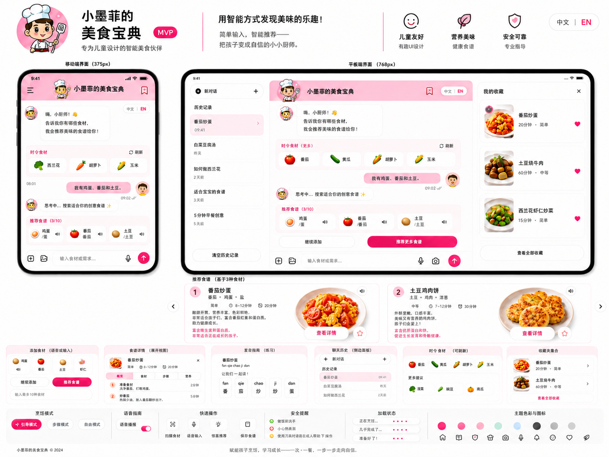
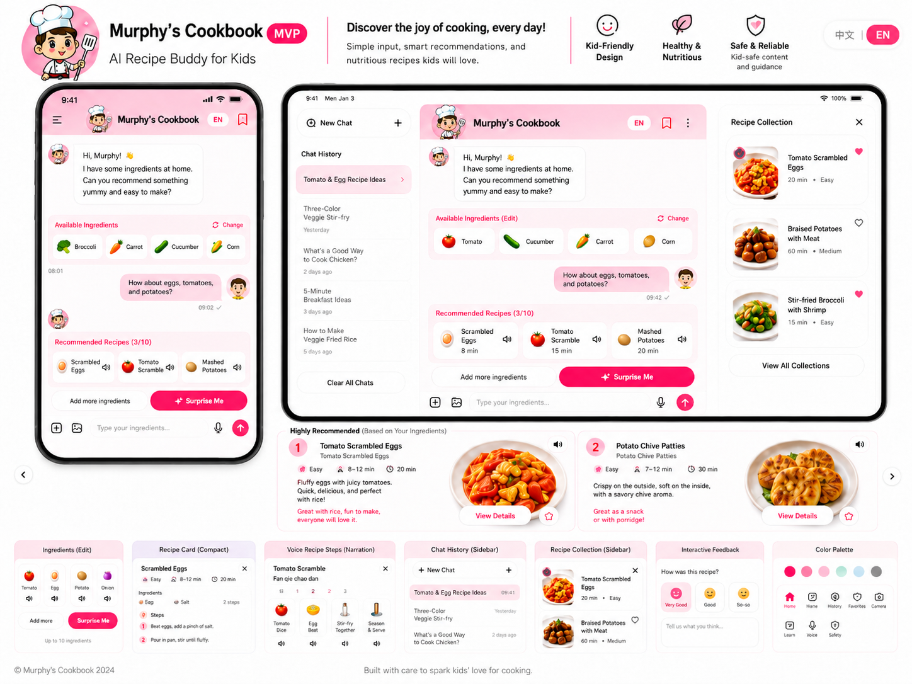
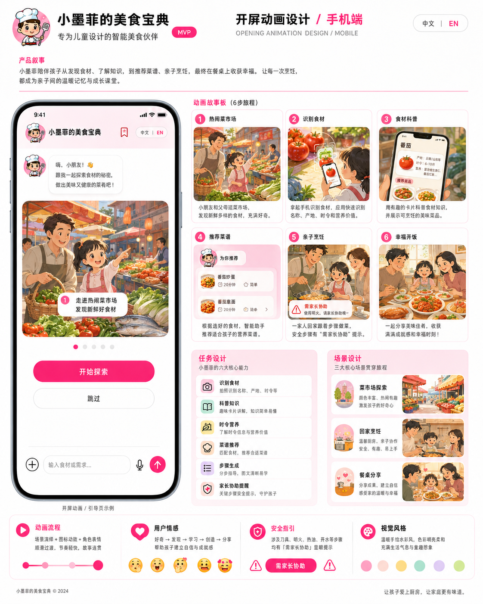

开屏动画展示
展示小墨菲厨师形象、儿童化视觉风格、双语入口和 chatbox 首屏。
AI Agent · Kids Cooking · Product Demo
Murphy's Cookbook 面向小学 1-6 年级学生和家庭厨房场景， 通过多模态食材识别、AI 菜谱推荐、语音朗读、双语学习、 食材科普和 Seedance 2.0 烹饪视频卡槽，把“今天吃什么” 变成一次可操作、可学习、可亲子协作的生活智能体体验。
Tomato Scrambled Eggs · fān qié chǎo dàn
报告按产品真实操作顺序组织，从开屏动画到中文流程，再到英文切换后的复演， 让评委可以连续理解智能体的输入、推理、生成、呈现和复访能力。
展示小墨菲厨师形象、儿童化视觉风格、双语入口和 chatbox 首屏。
支持文字、语音、拍照、上传图片。识别后生成横向食材卡，并可查看营养知识。
用户确认食材后手动触发推荐，AI 返回儿童友好的菜谱卡片。
点击菜谱内按钮按需生成步骤，展示食材加入时机、儿童动作和家长陪同提醒。
收藏后支持从收藏列表定位回原对话卡片，便于家庭复做。
切换英文后重复食材识别、菜谱推荐、步骤生成和收藏，展示双语学习能力。
每个演示步骤都对应一个产品关键能力：儿童可理解、家长可判断、AI 可解释、结果可复访。
Step 01
首屏使用卡通厨师“小墨菲”建立亲和感。顶部导航提供中英文切换、拼音模式、新对话、 历史对话和菜谱收藏入口；底部固定输入栏保证移动端随时可输入。

Step 02
用户可以通过文字、语音、拍照或上传图片提供食材。系统识别完成后不自动推荐菜谱， 而是先展示可确认的食材清单；点击食材卡可调用食材知识接口，生成儿童能看懂的科普卡片。


Step 03
用户确认食材后点击“推荐菜谱”。AI 根据小学阶段儿童默认画像，推荐低油脂、轻口味、 膳食均衡的菜谱。菜谱以走马灯卡片展示，不跳转页面，适合手机端连续阅读。
Tomato Egg Soup
Tomato Scrambled Eggs · fān qié chǎo dàn
酸甜开胃，蛋白质和维生素搭配均衡，适合亲子一起完成。
Egg Rice Bowl
Step 04
菜谱步骤按需生成，避免首屏等待过久。步骤内容说明食材处理、加入时机、 关键火候和预期状态，并区分儿童可参与动作与高风险家长协助动作。
小朋友可以清洗番茄，家长协助切成小块；鸡蛋打入碗中搅匀。
家长开火热锅倒油，蛋液入锅后轻轻推动，凝固后盛出。
番茄块下锅炒出汁水，再倒回鸡蛋，加入少量盐调味。
审核通过后显示 12-15 秒动画短片；未命中时展示“烹饪视频制作中”。
Step 05
家长或儿童可收藏喜欢的菜谱。收藏成功时按钮附近出现短暂彩带屑动效， 收藏列表可定位回原始对话里的菜谱卡，方便复做和复习。
点击收藏项后关闭侧栏，并自动定位到原对话中的菜谱卡片。
Step 06
点击顶部中英文按钮切换英文模式。系统会把语言状态带入食材知识、菜谱推荐和步骤生成提示词， 英文模式下把中文拼音替换为英文单词音节组合，帮助儿童练习英文读音。
番茄炒蛋
fān qié chǎo dàn
清洗番茄，家长协助热锅。
Tomato Scrambled Eggs
to-ma-to · scram-bled · eggs
Wash tomatoes. Ask a parent to help with the hot pan.
报告视觉遵循设计规范：黑白编辑式框架承载严肃信息，使用 lime、lilac、cream、 mint、pink、coral 等高饱和色块承载儿童友好的故事段落。




产品不是一次性问答，而是由多个节点组成的工作流：多模态感知、食材确认、 模型路由、结构化生成、校验缓存和儿童化呈现。